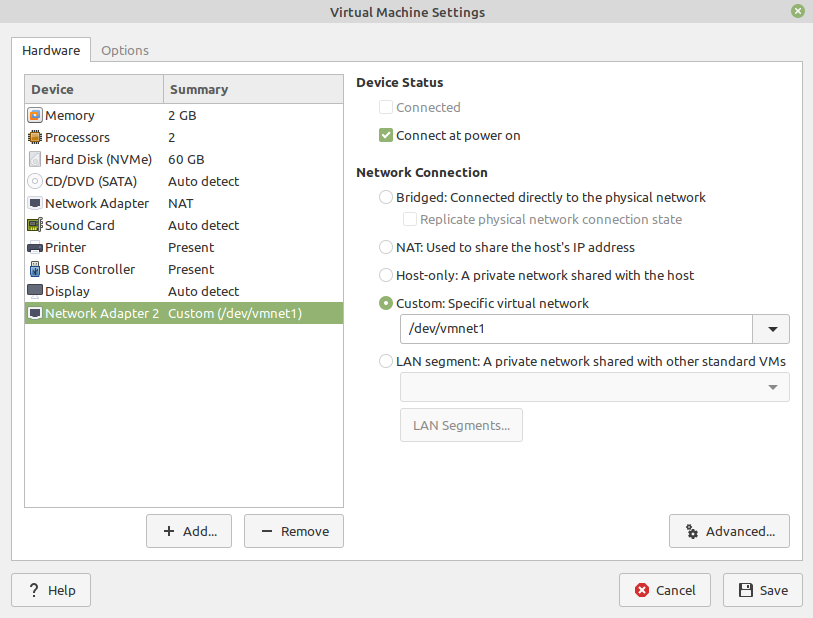
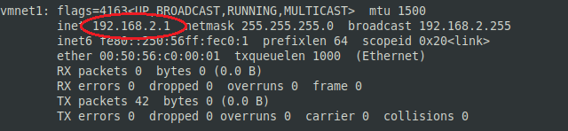
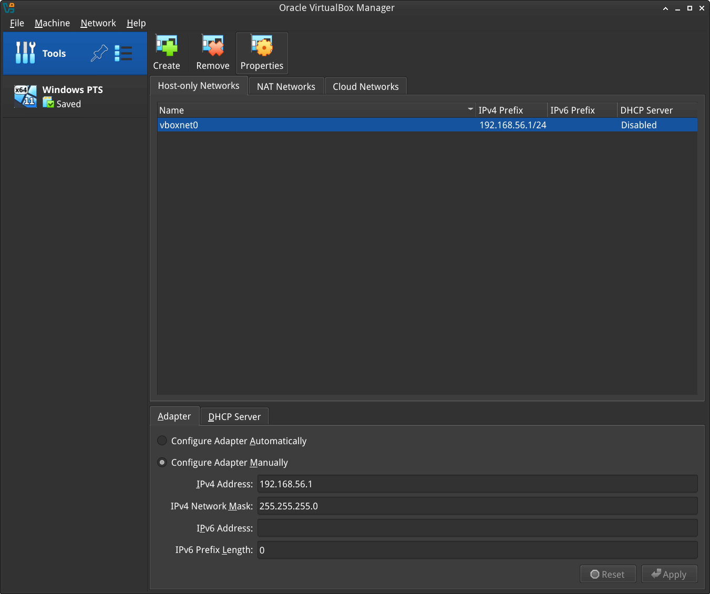
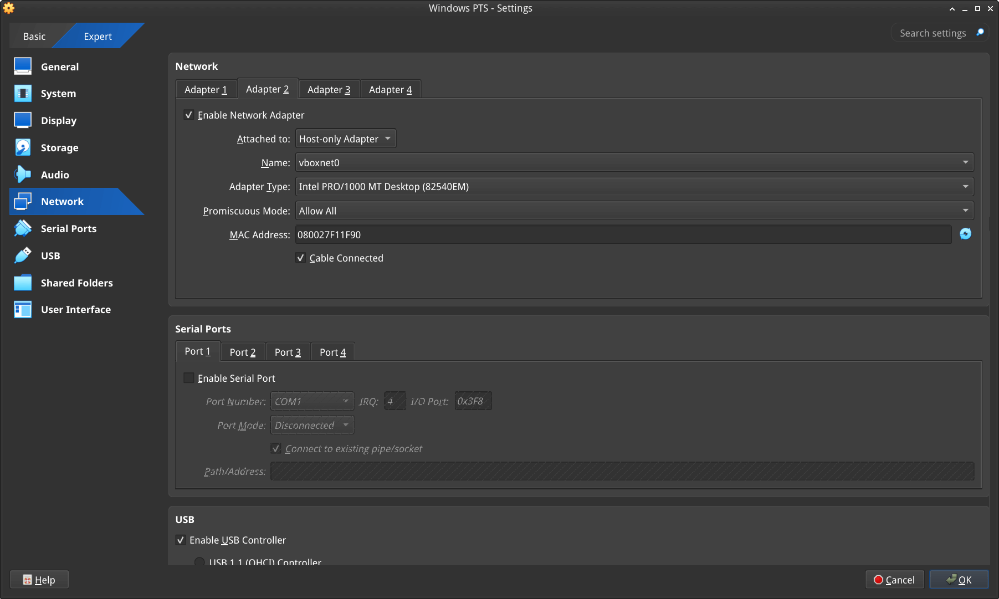
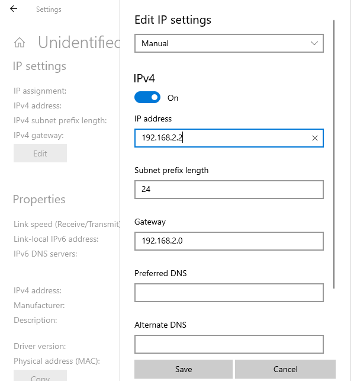
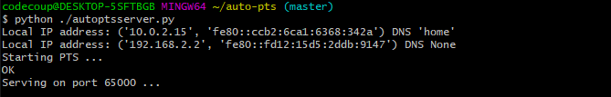

在 Linux 上运行 AutoPTS
本教程介绍如何在 Linux 上搭建 AutoPTS 客户端，并让 AutoPTS 服务器运行在 Windows 10 虚拟机上。已在 Ubuntu 20.4 和 Linux Mint 20.4 上测试。
你必须已经搭建好 Zephyr 开发环境。详见 入门指南。
支持以下方法测试 Zephyr Bluetooth 主机：
在 QEMU 上测试 Zephyr 主机协议栈
在 native_sim 上测试 Zephyr 主机协议栈
在实际硬件（例如 nRF52）上测试 Zephyr 组合构建（控制器 + 主机）
关于使用 QEMU 或 native_sim 运行，请参阅 在 QEMU 或 native_sim 上运行。
搭建 Linux 环境
关于如何在 Linux 上搭建构建和烧录应用程序的环境，请按照 入门指南 操作。
搭建 Windows 10/11 虚拟机
选择并安装虚拟机管理程序，例如 VMWare Workstation（推荐）或 VirtualBox。如果你的主机 CPU 少于 6 个，使用 VirtualBox 可能会遇到一些问题。
创建 Windows 虚拟机实例。确保它至少有 2 个核心并已安装客户机扩展。
本环境已在 VirtualBox 7.2.4 和 VMWare Workstation 16.1.1 Pro 上测试。
更新 Windows
在以下位置更新 Windows：
开始 -> 设置 -> 更新和安全 -> Windows 更新
设置 NAT
可以使用 NAT 和端口转发在 Linux 宿主机和 Windows 客户机之间建立通信。对于 VirtualBox，这是最简单的设置方式，不需要配置任何静态 IP，也不会被 Windows 防火墙阻止。
VirtualBox
打开虚拟机的网络设置。适配器 1 默认已创建为 NAT。打开端口转发（Port Forwarding）菜单，添加所需的端口。

例如，进行如下设置后，就可以使用 localhost:65000 和 localhost:65002（或 127.0.0.0:65000 和 127.0.0.0:65002）连接到 Windows 中运行在 65000 和 65002 端口上的 AutoPTS 服务器。

设置静态 IP
如果无法或不想使用 NAT，也可以配置静态 IP。
VMWare Works
在 Linux 上打开 Virtual Network Editor 应用程序并创建网络：

打开虚拟机的网络设置，添加自定义适配器：


在终端中输入“ifconfig”，应能找到宿主机的 IP：


VirtualBox
在 Linux、macOS 和 Solaris 上，Oracle VM VirtualBox 只允许为仅主机（host-only）适配器分配 192.168.56.0/21 范围内的 IP 地址，因此在 VirtualBox 中使用静态地址时，只能使用这一地址范围。
进入：
File -> Tools -> Network Manager
并创建网络：


打开虚拟机的网络设置。适配器 1 默认已创建为 NAT。添加适配器 2：


Windows
在 Windows 虚拟机上设置静态 IP。进入
设置 -> 网络和 Internet -> 以太网 -> 未识别的网络 -> 编辑
并设置：


安装 Python 3
在 Windows 上下载并安装最新的 Python 3。让安装程序将 Python 安装目录添加到 PATH，并禁用路径长度限制。


安装 Git
下载并安装 Git。安装时启用选项：Enable experimental support for pseudo consoles。我们将使用 Git Bash 作为 Windows 终端。

安装 PTS
在 Windows 虚拟机上，从 https://pts.bluetooth.com/download 安装最新的 PTS。记得从安装目录“C:/Program Files (x86)/Bluetooth SIG/Bluetooth PTS/PTS Driver/win64/CSRBlueCoreUSB.inf”安装驱动

备注
从 PTS 8.0.1 开始，不再包含 Bluetooth Protocol Viewer。因此，要捕获 Bluetooth 事件，需要单独下载它。
连接 PTS 适配器（dongle）
使用 VirtualBox 时应该没有问题，只需在 设备 -> USB 中找到适配器并连接即可。
使用 VMWare 时，如果在 VM -> Removable Devices 中找不到适配器，可能需要一些技巧。在 Linux 终端中输入：
usb-devices
并在输出中找到你的 PTS Bluetooth USB 适配器

记下 Vendor 和 ProdID 编号。关闭 VMWare Workstation，在文本编辑器中打开虚拟机的 .vmx 文件（路径类似于 /home/codecoup/vmware/Windows 10/Windows 10.vmx），在文件任意位置写入以下一行：
usb.autoConnect.device0 = "0x0a12:0x0001"
只需将 0x0a12 替换为之前找到的 Vendor 编号，将 0x0001 替换为 ProdID 编号。
连接设备（仅在实际硬件测试模式下需要）


搭建 auto-pts 项目
Linux 上的 AutoPTS 客户端
克隆 auto-pts 项目：
git clone https://github.com/auto-pts/auto-pts.git
安装 socat，它用于从 UART 的 tty 文件传输 BTP 数据流：
sudo apt-get install python-setuptools socat
安装所需的 Python 模块：
cd auto-pts
pip3 install --user -r autoptsclient_requirements.txt
Windows 虚拟机上的 AutoPTS 服务器
在 Git Bash 中克隆 auto-pts 项目仓库：
git clone https://github.com/auto-pts/auto-pts.git
安装所需的 Python 模块：
cd auto-pts
pip3 install --user wheel
pip3 install --user -r autoptsserver_requirements.txt
重启虚拟机。
运行 AutoPTS
关于如何构建、烧录和运行 Bluetooth Tester 应用程序，请参考 https://github.com/zephyrproject-rtos/zephyr/tree/main/tests/bluetooth/tester 中的信息。
服务器和客户端默认运行在 localhost 地址上。在 Windows 虚拟机中运行服务器：
python ./autoptsserver.py


有关如何运行 auto-pts 的更多信息，另请参阅 https://github.com/auto-pts/auto-pts。
在硬件上测试 Zephyr 主机协议栈
python ./autoptsclient-zephyr.py zephyr-master -t /dev/ttyACM0 -b BOARD -i SERVER_IP -l LOCAL_IP
其中 /dev/ttyACM0 是开发板的 tty，BOARD 是要使用的开发板（例如 nrf53_audio），SERVER_IP 是 AutoPTS 服务器的 IP，LOCAL_IP 是 Linux 机器的本地 IP。
在 QEMU 上测试 Zephyr 主机协议栈
需要挂载一个 Bluetooth 控制器。关于使用 HCI UART 运行，请参阅 HCI UART。
python ./autoptsclient-zephyr.py zephyr-master BUILD_DIR/zephyr/zephyr.elf -i SERVER_IP -l LOCAL_IP
其中 BUILD_DIR 是构建目录，SERVER_IP 是 AutoPTS 服务器的 IP，LOCAL_IP 是 Linux 机器的本地 IP。
在 native_sim 上测试 Zephyr 主机协议栈
为 native_sim 构建测试器应用程序后，会生成一个 zephyr.exe 文件，可作为原生 Linux 应用程序运行。根据你的系统情况，可能需要执行以下步骤才能成功运行 zephyr.exe。
设置权能（capabilities）
由于应用程序需要连接 HCI 套接字的权限，你可能需要执行以下操作
setcap cap_net_raw,cap_net_admin,cap_sys_admin+ep zephyr.exe
如果使用 sudo 等方式运行 zephyr.exe 或 ./autoptsclient-zephyr.py，则不需要这一步。
关闭 HCI 控制器
在运行 zephyr.exe 之前，你可能还需要将 HCI 控制器“down”或“power off”。可以使用 hciconfig 完成，如下
hciconfig hciX down
其中 hciX 是类似 hci0 的值。可以运行 hciconfig 获取 HCI 设备列表。
由于 hciconfig 在某些系统上已弃用，你可能需要使用
btmgmt -i hciX power off
与 hciconfig 类似，btmgmt info 可用于列出当前的控制器及其状态。
关闭控制器电源时，hciconfig 和 btmgmt 都可能需要 sudo。
运行客户端
应用程序可以按如下方式运行
python ./autoptsclient-zephyr.py zephyr-master --hci HCI BUILD_DIR/zephyr/zephyr.exe -i SERVER_IP -l LOCAL_IP
其中 HCI 是 HCI 索引，例如 0 或 1，BUILD_DIR 是构建目录，SERVER_IP 是 AutoPTS 服务器的 IP，LOCAL_IP 是 Linux 机器的本地 IP。
故障排除
运行一个测试后，由于 PTS 日志中 APICOM 给出失败判定，我需要重启 Windows 虚拟机才能运行下一个测试
这说明虚拟机的处理器核心或内存不足。请尝试在设置中增加。注意，以 VirtualBox 作为虚拟机管理程序时，4 个 CPU 的主机可能不够。这种情况下，请改用 VMWare Workstation。
无法启动 autoptsserver-zephyr.py，总是出现 Python 错误

以下一个或多个步骤应该会有所帮助：
关闭所有 PTS 窗口。
重新插拔 PTS Bluetooth 适配器。
删除临时工作区。它位于 auto-pts-code/workspaces/zephyr/zephyr-master/ 中，名为 temp_zephyr-master。注意不要删除原始的 zephyr-master.pqw6。
重启 Windows 虚拟机。
PTS 自动化窗口不断打开又关闭
这表示未能捕获 PTS 适配器。如果 AutoPTS 服务器能够找到并使用 PTS 适配器，窗口标题会显示适配器的 Bluetooth 地址。如果没有显示，请确保适配器已插入、已更新并能被 PTS 识别。

如果此后仍然无法运行测试，请确保已安装 Bluetooth Protocol Viewer。